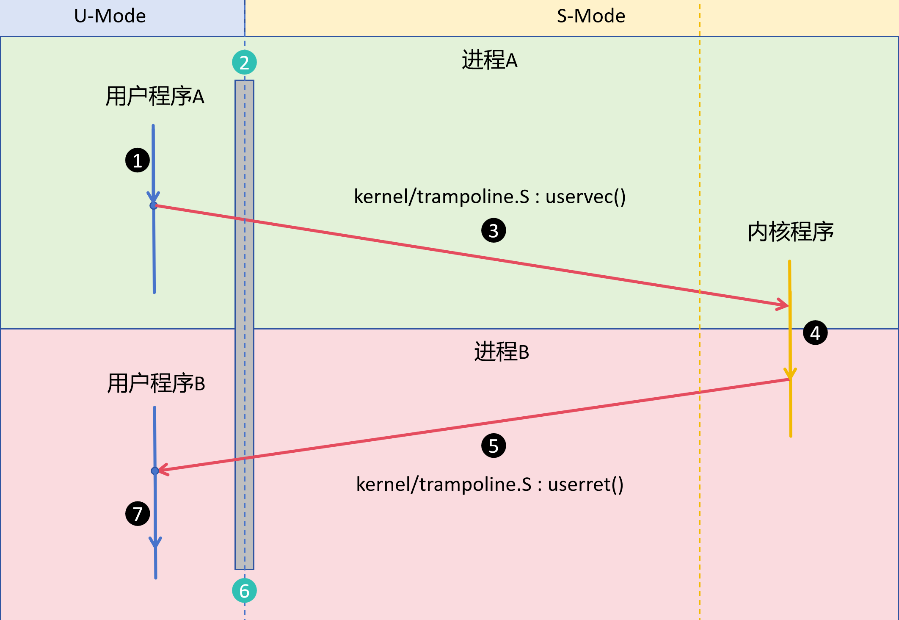

实验四：xv6进程调度
在开始实验之前，提交 lab3 分支，合并到 master(main) 分支，并创建新的 lab4 分支：
git add .
git commit -m "lab3 done"
git checkout master
git merge lab3
git checkout -b lab4
完成本次实验后，应能够：
理解时钟中断
理解进程切换的现场保存与恢复
理解 xv6 的进程调度机制
理解 xv6 的启动流程
实现
yield系统调用，并用两个进程验证主动让出 CPU 的过程阅读四种调度策略，能根据到达时间、运行时间和优先数推演运行顺序
实验准备
本实验主要参考以下文件：
kernel/trap.c查看
usertrap、devintr函数。kernel/start.c、kernel/trap.c查看
timerinit与clockintr，理解下一次时钟中断怎样产生。kernel/proc.c查看
yield、sched、scheduler函数。kernel/swtch.S理解进程切换过程。
时钟中断处理
RISCV的时钟中断可以认为是一个 计数器 + 每个核独立的比较器： mtime 持续递增，
每个 hart 有自己的 mtimecmp。当 mtime >= mtimecmp 时，
该 hart 的时钟中断处于待处理状态；处理程序把比较值移到未来，为下一次中断设好时间。
void
timerinit()
{
// enable the sstc extension (i.e. stimecmp).
w_menvcfg(r_menvcfg() | (1L << 63));
// allow supervisor to use stimecmp and time.
w_mcounteren(r_mcounteren() | 2);
// ask for the very first timer interrupt.
w_stimecmp(r_time() + 1000000);
}
中断处理在 kernel/trap.c 的 devintr() 中，
通过 scause 判断是一次时钟中断，因此调用时钟中断处理程序 clockintr()，
2 是 devintr() 返回的值，在 xv6 中表示是时钟中断：
else if(scause == 0x8000000000000005L){
// timer interrupt.
clockintr();
return 2;
}
处理时钟中断的方式就是为下一次中断设好时间：
void
clockintr()
{
if(cpuid() == 0){
acquire(&tickslock);
ticks++;
wakeup(&ticks);
release(&tickslock);
}
// ask for the next timer interrupt. this also clears
// the interrupt request. 1000000 is about a tenth
// of a second.
w_stimecmp(r_time() + 1000000);
}
回到 usertrap()，如果 devintr() 返回 2，则说明是时钟中断，调用 yield() 切换进程。
// give up the CPU if this is a timer interrupt.
if(which_dev == 2)
yield();
进程切换
从时钟中断到真实的进程切换
沿图中的 A → 调度器 → B，依次看调度器是谁、现场怎样保存、下一个进程怎样选出。


图概括了用户态 A 到用户态 B 的切换；CLINT 版本在②附近还会短暂进入 M 模式 处理硬件定时器，③、⑤ 的红色箭头概括了中间的内核代码。
调度器现场
调度器属于 CPU，不属于某个进程
cpus[CPU 编号] → struct cpu
├─ proc ─────→ 当前运行的 struct proc（也可能为 0）
└─ context ──→ 调度器上次暂停的位置
proc[NPROC] ───→ 共享的进程表；每项都有自己的 state、context、trapframe 和内核栈
每个 CPU 从 main() 进入自己的 scheduler() 循环。它有独立的内核执行现场，
但不是一个带 PID 的进程。c->proc 才指向此刻占用该 CPU 的进程。
mycpu() 用 tp 寄存器里的 hart 编号取得 &cpus[id]；myproc()
在此基础上读取 c->proc：
push_off(); // 读取期间禁止中断
struct cpu *c = mycpu();
struct proc *p = c->proc;
pop_off();
return p;
短暂关闭中断，是为了避免读到 CPU 编号后进程被抢占、迁移到另一 CPU。
因此 mycpu() 返回的是 CPU 的记录，不是一个“管理调度的进程”。
保存现场分析
图中 A 遇到时钟中断后，先沿 实验三的陷入路径 进入内核：
uservec 保存 A 的用户寄存器，usertrap() 识别时钟中断并调用 yield()。
接下来才发生内核执行流之间的切换。
两种现场分别放在哪里
A->trapframe：用户态寄存器，由uservec保存，供 A 将来返回用户态。A->context：A 在内核里暂停的位置，由swtch保存。c->context：该 CPU 的调度器暂停的位置，也由swtch保存。
yield() 把 A 改为 RUNNABLE，再通过 sched() 交出 CPU：
p->state = RUNNABLE; // yield()
sched(); // yield()
swtch(&p->context, &mycpu()->context); // sched()
swtch 的两个参数分别是“保存到哪里”和“从哪里恢复”。看它在汇编中
怎样改变返回位置（s0``～``s11 的同类指令已省略）：
sd ra, 0(a0) # 保存 A 的返回地址
sd sp, 8(a0) # 保存 A 的内核栈指针
ld ra, 0(a1) # 读取调度器的返回地址
ld sp, 8(a1) # 换回调度器的内核栈
ret # 回到调度器上次调用 swtch 的下一行
context 只保存 ra、sp、s0``～``s11：它们是 RISC-V
调用约定要求被调用者保留的寄存器；其他仍要用的值由编译器按调用约定
保存在内核栈等位置。这里不恢复用户寄存器，用户现场仍留在 trapframe。
xv6 调度机制
调度器接回 CPU 后，并不是从 main() 重来，而是从上次调用
swtch(&c->context, &A->context) 的下一行继续。
for (;;) {
int found = 0;
for (p = proc; p < &proc[NPROC]; p++) {
acquire(&p->lock);
if (p->state == RUNNABLE) {
p->state = RUNNING;
c->proc = p;
swtch(&c->context, &p->context); // 进程交回 CPU 时从这里返回
c->proc = 0;
found = 1;
}
release(&p->lock);
}
if (found == 0)
asm volatile("wfi"); // 等待中断，再扫描
}
按图追踪 A → B
调度器曾选中 A，保存自己的现场到
c->context，切入A->context。A 经时钟中断、
yield()、sched()，保存A->context并恢复c->context。调度器从上面那次swtch的下一行接着执行。调度器清空
c->proc、释放 A 的锁，继续扫描进程表。找到RUNNABLE的 B 后，设置RUNNING和c->proc = B，再切入B->context。B 从自己上次暂停的内核位置继续，最终由返回用户态的路径恢复
B->trapframe。如果 B 是首次运行，预设的context.ra使它先进入forkret，再走返回用户态的路径。
进程锁跨越 swtch，直到调度器接回 CPU 后才释放，防止另一 CPU 过早
运行同一进程。完整源码还通过 intr_on()/intr_off() 和 intena
处理切换时的中断状态。默认调度器按进程表顺序寻找 RUNNABLE
分析进程切换
请以 xv6 实现为例，分析一个进程A遇到时钟中断后，切换到另一个进程B的全过程。 完整解释进程A保存了哪些上下文，保存在什么地方。又是如何恢复的进程B的上下文。 结合代码片段分析。
实现 yield 系统调用
内核已有 yield()，但用户程序不能直接调用内核函数。本作业要新增用户态入口，
让用户程序通过系统调用**主动让出 CPU**，再观察两个进程的运行。
接通系统调用
参照 实验三的系统调用路径，完成以下修改：
在
kernel/syscall.h为SYS_yield分配一个**未使用**的系统调用号。在
kernel/syscall.c声明sys_yield，并加入syscalls[]分发表。在
kernel/sysproc.c实现sys_yield(void)：调用内核已有的yield()，待该进程再次运行后返回0。在
user/user.h声明int yield(void);，在user/usys.pl加入entry("yield");，不要手改生成的user/usys.S。
调用链应能从用户态的 yield() 一直追踪到
sys_yield() → yield() → sched() → swtch() → scheduler()。
两个进程交替打印
编写 user/ab.c，加入 Makefile 的 UPROGS。
父进程打印 A，子进程打印 B；两者每次打印后
都调用新增的 yield()。预期字符序列为：
ABABABABABABABABABAB
行为如下：
父进程：while(1) {打印 A → yield()}
子进程：while(1) {打印 B → yield()}
实现两个进程交替打印
完成两个进程交替打印，并截图输出的内容。 由于进程切换可能过快，需要适当调整 yield() 的调用频率。 可以在printf后添加 pause(1) 进行延迟。
进程调度算法
本节用于理解四种调度思想， 不要求在 xv6 中实现它们。
前面分析的 xv6 scheduler() 按进程表扫描 RUNNABLE；下面的服务时间、
响应比和优先数是为了比较算法而给出的假设数据，不是 xv6 默认调度器的选择依据。
前三张图使用同一组进程，均假设单 CPU、运行期间不阻塞，时间单位相同：
进程 |
到达时间 |
运行时间 |
|---|---|---|
P1 |
0 |
3 |
P2 |
1 |
6 |
P3 |
2 |
2 |
P4 |
3 |
3 |
先来先服务 FCFS
每次选择 最早到达 的就绪进程，运行到完成。图中 P1 在 t=0
开始运行；到 t=3 时 P2、P3、P4 都已到达，因此先选 P2。
长进程 P2 运行期间，后面的短进程也必须等待。

FCFS：按到达顺序运行；P2 占用 t=3～9，P3 只能继续等待。
最短作业优先 SJF
每次从 已经到达**的进程中选择运行时间最短者，运行到完成。 ``t=0`` 时只有 P1，不能提前选择尚未到达的 P3；``t=3`` 时 P3 最短，因此它排在 P2 前面。这里讨论的是**非抢占式 SJF。

SJF：只在每次选择时比较已到达的进程；已开始运行的 P1 不被抢占。
最高响应比优先 HRRN
每次选择前重新计算就绪进程的 响应比Ri(t)，取最大者运行到完成：
其中 A_i 是到达时间， B_i 是运行时间， t-A_i 是在 当前选择时刻
已经等待的时间。 t=3 时 P3 的响应比为 1+1/2=1.5，高于 P2 的
1+2/6≈1.33； t=5 时 P2 与 P4 都约为 1.67，
本例按更早到达者优先，选择 P2。

HRRN：等待越久，响应比会上升；每次选择时重新计算。
基于最高优先数的循环轮转调度
仍使用上表的 P1～P4，并额外设初始优先数分别为 4、3、3、2，
时间片为 2。优先数越大越先运行；每次最多运行一个时间片，
未完成时优先数减 1 并重新入队。
图中按以下规则推演：
初次到达的进程按到达时间、输入顺序入队；
每次选择当前优先数最大的就绪进程；相同优先数选择入队最早者；
运行时长为“时间片与剩余运行时间的较小值”；新进程到达不会中断当前时间片；
时间片结束时，将截至该时刻的新到达进程先按到达时间、输入顺序入队；
若当前进程已完成，记录完成时间并离开就绪队列；
若尚未完成，将优先数减 1，赋予新的入队序号，再放回就绪队列；
同优先数的“轮转”依据是 入队顺序，不能每次都按进程号选择。 重新入队的进程应排在已经处于相同优先数的进程之后。
例如 t=2 时 P1 未完成，优先数从 4 降到 3 并重新入队；
P2 已在 t=1 以优先数 3 入队，因此下一次先运行 P2。

每段最多运行 2 个时间单位；同优先数按入队先后选择。
理解常见进程调度算法
不需要修改 xv6 调度器，也不需要编写这四种算法的程序。 请对照四张图，写出每种算法的选择依据、可能的优点与问题； 重点解释为什么同一组 P1～P4 会得到不同的运行顺序。